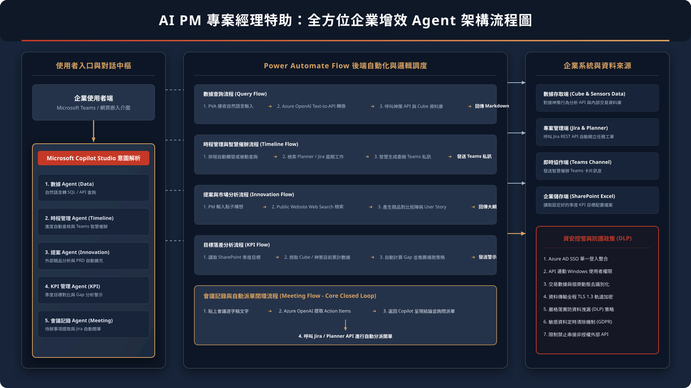
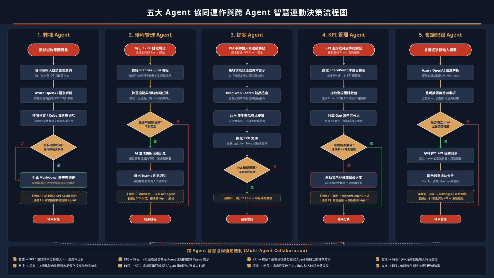

全方位企業增效 Agent 技術架構
結合 Microsoft Copilot Studio、Power Automate 與企業內部安全數據源的整合架構
系統資料流與安全防護架構
使用者端 (PM / 團隊成員)
Teams / Web 介面
→
Copilot Studio
意圖識別與對話管理
→
Power Automate Flow
API Plugins / HTTP 動作
→
神策數據 API
Cube 資料庫
Jira / Planner API
智慧 Agent 技術架構與決策流程圖 (向量中文 16:9 版)

五大 Agent 協同運作決策詳細流程圖 (向量中文 16:9 簡報版)

資安與防護控管
-
身分驗證與單一登入
整合 Azure AD 進行單一登入，嚴格限制僅限數位金融處授權員工存取。
-
傳輸加密與去識別化
所有外部與內部 API 呼叫均強制採用 TLS 1.3 加密，敏感數據在查詢前均進行遮罩與去識別化處理。
-
資料防洩漏 (DLP)
限制資料僅能在受信任的企業 API 與 Power Automate 節點間傳遞，禁止流向非授權外部服務。
企業核心增效指引
40%
行政工時釋放
25%
任務逾期率降低
藉由自動化日常繁雜事務（如數據查詢、會議派單、智慧催辦），讓專案管理人員能將精力集中於高價值的策略性規劃與產品設計。
數據 Agent (Data Insights Agent)
透過自然語言快速查詢 Cube 與神策數據，自動產出繁體中文摘要與 Markdown 表格
互動模擬查詢
執行流程與結果輸出
請點擊左側「執行查詢」按鈕以模擬運作流程...
時程管理 Agent (Timeline & Resource Agent)
智慧掃描 Jira/Planner 工作看板，自動產出委婉明確的 Teams 催辦訊息並提供衝突預警
看板狀態掃描
點擊下方按鈕以模擬掃描 Jira 看板並獲取今日逾期任務：
智慧推播與預警預覽
請點擊左側「掃描看板狀態」開始模擬...
提案 Agent (Product Innovation Agent)
輸入產品構想，自動搜尋外部市場進行競品分析，並產出標準的 User Story 與驗收標準
創新點子輸入
自動產出的競品分析與 User Story
請輸入左側點子並點擊「產生競品分析與 PRD 擴充」按鈕...
KPI 管理 Agent (KPI & Gap Analysis Agent)
對比 SharePoint 中的季度 KPI 與 Cube 實際數據，主動發送落差分析與推薦補救策略
季度 KPI 追蹤
本季大戶投 GMV 目標
目標：1,000 萬
目前達成：450 萬 (45%)
落後 15%
活躍用戶增加率
目標：+20%
目前達成：+18% (90%)
符合進度
差距分析與推薦改善方案
請點擊左側「執行 Gap 分析與策略推薦」按鈕...
會議記錄 Agent (Meeting Minutes Agent)
貼上 Teams 會議逐字稿，一鍵提取結構化待辦事項並自動開單至 Jira / Planner 系統
會議逐字稿內容
會議結構化摘要與派單
請點擊左側「提取會議結論與 Action Items」按鈕...